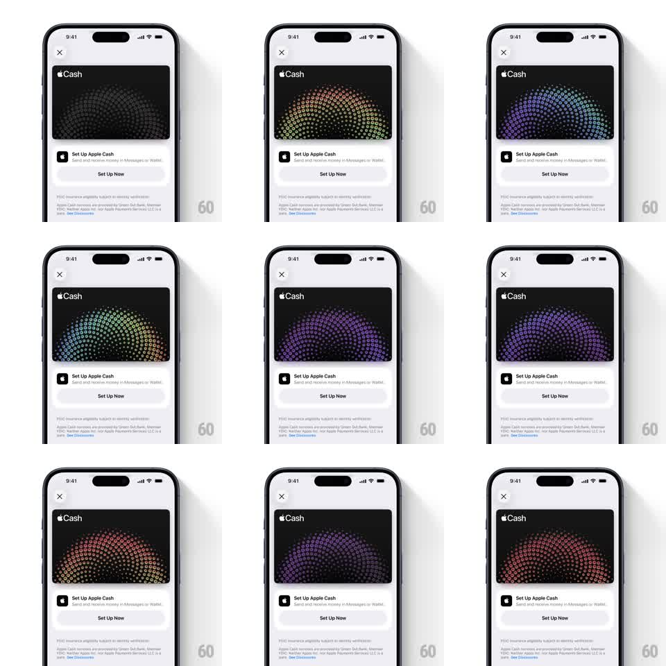

Media
Frame-by-frame

Rebuild this interaction 1:1: Apple Cash's card art - the card's holographic dot-dome pattern shifts color with device tilt, flowing through gray, amber, teal, violet, and magenta like a foil hologram, while the setup sheet around it stays still.

Rebuild this interaction 1:1: Apple Cash's card art - the card's holographic dot-dome pattern shifts color with device tilt, flowing through gray, amber, teal, violet, and magenta like a foil hologram, while the setup sheet around it stays still. ## Integration Integration: stack-agnostic spec - springs given as stiffness/damping, timed motions as duration + curve; map every value to your framework and animation library of choice. ## Scene Wallet setup sheet: "Cash" card at top (black face with a dome of small dots), "Set Up Apple Cash" copy and Set Up Now button below, legal fine print at the bottom. ## Motion spec Pattern: gyroscope-driven holographic foil. - The dot dome is a normal-mapped surface: tilting the device changes the "light angle", sweeping hue across the dots (hue rotation up to ~180deg for a full tilt range). - Response is 1:1 with tilt, smoothed (low-pass filter, ~150ms lag) so it feels like material, not a sensor readout. - Dots near the dome's rim shift color before the center - the gradient always radiates from the light direction. - At rest, a slow idle drift keeps the foil alive (hue +-10deg over 6s). - Brightness also responds: tilting toward the "light" adds up to +20% luminance on the lit side. ## Calibration - The illusion depends on spatial coherence: hue must vary continuously across the dome, never uniform. - Clamp total hue travel; a full rainbow reads as a sticker, not foil. ## Reduced motion Static violet dome (the canonical brand color); no gyro response. ## Don't miss - The dot grid has subtle size falloff (smaller at the rim) - it's a dome, not a flat halftone. - Only the card reacts to tilt; the sheet's text and buttons are fixed.